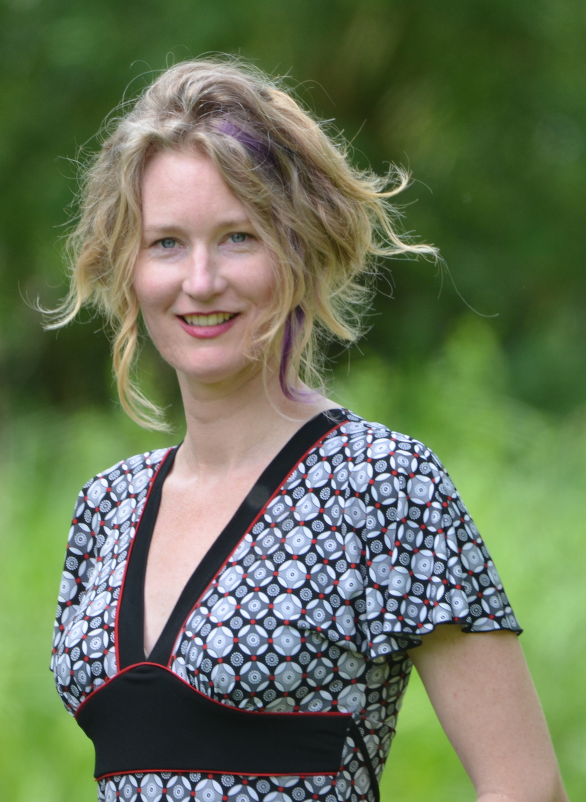

|
|
|

© Dieter Lukas
|
Corina Logan
Senior Researcher
Department of Human Behavior, Ecology and Culture
Max Planck Institute for Evolutionary Anthropology
corina_logan@eva.mpg.de
Twitter: @LoganCorina
Impactstory - ORCID
Home
CV
Lab
|

|
|
|
LAB CODE OF CONDUCT
Code of conduct for working with subjects
We respect the individuals that collaborate with us to provide us with the data on which our science relies, regardless of their species. Their well being is of utmost importance, and we take extra care when we are fully responsible for them (i.e., when conducting behavioral choice tests in captivity).
My commitment to conducting rigorous science
My goal is to ethically conduct and promote rigorous science. I avoid exploiting myself as a scientist, I facilitate equality and diversity by ensuring that no one is discriminated against when reading my scientific literature, and I keep funds in academia (see my paper and presentation for background). I use the mechanism of transparency to achieve my goal so anyone can evaluate my contributions at every step of the process. I only submit papers to 100% open access journals at ethical publishers, and I publish the review histories (when it is an option) and datasets (and usually also R code) that go with my papers. I only review and serve as an editor for articles at 100% open access journals at ethical publishers, and I sign my reviews. Occasionally, I may submit papers to or review articles for journals that are not 100% open access (but are at ethical publishers) as long as 1) the article will be made open access immediately upon publication (gold OA), and 2) the journal deducts article processing charges from library subscriptions so universities do not pay more than once for the same article. (Updated Nov 2016)
Publishing Ethics
Before joining my lab, please take a look at my publishing ethics in the previous paragraph. If you are happy to publish according to these ethics on our collaborative projects, then feel free to contact me about the potential to work together.
Occasionally it happens that I became part of a research project before I adopted my current publishing ethics. In these cases, I do not pressure collaborators to publish in particular journals (the bullying stops here). If these collaborators would like to publish the research in a journal that I am not willing to submit to, I remove myself as a co-author.
It is important that all authors on a paper deserve the credit. I follow the ICMJE guidelines for determining when co-authorship is warranted.
Reviewing Ethics
If I am invited to review a paper for a journal and/or publisher that is not aligned with my commitment to conducting rigorous science, I accept the review, write the below text in the Comments to the Authors section, and submit the review. I got this idea from the Peer Reviewers' Openness Initiative and modified it to suit my particular ethics.
- - -
My goal is to ethically conduct and promote rigorous science. I avoid exploiting myself as a scientist, I facilitate equality and diversity by ensuring that no one is discriminated against when reading scientific literature I contribute to, and I keep funds in academia (see my paper, presentation, and website for background). I use the mechanism of transparency to achieve my goal so anyone can evaluate my contributions at every step of the process.
Therefore, I am only willing to review papers that:
1) are going to be published gold open access under a CC-BY license,
2) will publish the review history alongside the paper,
3) are submitted to a journal where 100% of the articles are open access, and
4) are submitted to a journal that is published by an academic non-profit organization, or a for-profit corporation that a) has low or no article processing charges, and/or b) heavily invests profits in academia, and/or c) are working to modernize publishing infrastructure for researchers
I am not willing to review this paper at this journal because criteria 2-4 are not met, and it is unclear whether criterion 1 is met.
Sincerely,
Corina Logan
Max Planck Institute for Evolutionary Anthropology
- - -
Lab Interpersonal Interactions
Vea una versión en Español
Siehe eine Version auf Deutsch
All members of the lab, along with visitors, are expected to agree with the following code of conduct. We will enforce this code as needed. We expect cooperation from all members to help ensure a safe and welcoming environment for everybody.
The Quick Version
The lab is dedicated to providing a harassment-free and welcoming experience for everyone, regardless of gender, gender identity and expression, age, sexual orientation, disability, physical appearance, body size, race, or religion (or lack thereof). We do not tolerate harassment of lab members in any form. Sexual language and imagery is generally not appropriate for any lab venue, including lab meetings, presentations, or discussions. (However, do note that we work on biological matters so work-related discussions of e.g., animal reproduction are appropriate.) We value individual differences and strive to create a welcoming environment for lab members.
The Less Quick Version
Harassment includes offensive verbal comments related to gender, gender identity and expression, age, sexual orientation, disability, physical appearance, body size, race, religion, sexual images in public spaces, deliberate intimidation, stalking, following, harassing photography or recording, sustained disruption of talks or other events, inappropriate physical contact, and unwelcome sexual attention.
Members asked to stop any harassing behavior are expected to comply immediately.
If you are being harassed, notice that someone else is being harassed, or have any other concerns, please contact Corina Logan (corina_logan [at] eva.mpg.de) immediately. If Corina is the cause of your concern, Margaret Tarampi (margaret [at] tarampi.com) is a good informal point of contact; she does not work for Corina or the Max Planck Institute for Evolutionary Anthropology, and has agreed to mediate. For official concerns, please contact the Max Planck Institute for Evolutionary Anthropology's Ombudsperson or Equal Opportunity Commissioner.
We realize that people come from all over the world to work on research projects in our lab, and we strive to make everyone feel welcome. For example, English may not be the native language of many lab members; therefore, we will take the time to go slowly and prioritize understanding over speed or convenience. As well, many lab members are multi-lingual, which can help facilitate communication.
We expect members to follow these guidelines at any lab-related event.
These Lab Interpersonal Interactions are based on Titus Brown's who cites the original source and credit: http://2012.jsconf.us/#/about & The Ada Initiative. Please help by translating or improving: http://github.com/leftlogic/confcodeofconduct.com. This work is licensed under a Creative Commons Attribution 3.0 Unported License
|
|
|